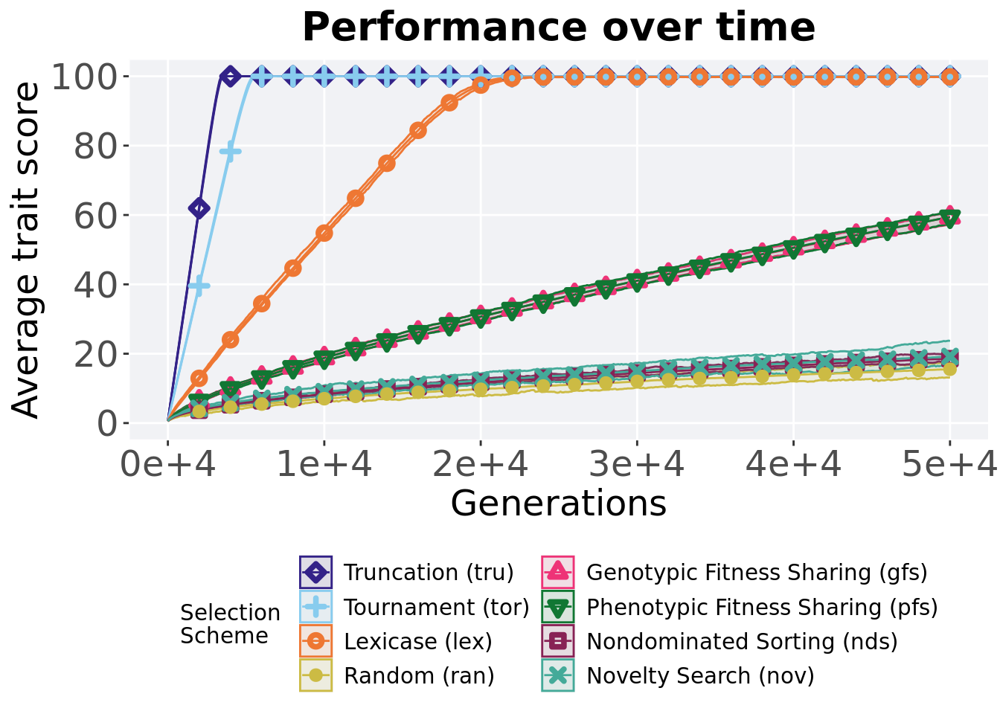

Chapter 2 Exploitation rate results
Here we present the results for best performances found by each selection scheme on the exploitation rate diagnostic. 50 replicates are conducted for each scheme explored.
2.2 Data setup
# dir = paste(DATA_DIR,'EXPLOITATION_RATE/','over-time.csv', sep = "", collapse = NULL)
over_time_df <- read.csv(paste(DATA_DIR,'EXPLOITATION_RATE/','over-time.csv', sep = "", collapse = NULL), header = TRUE, stringsAsFactors = FALSE)
over_time_df$scheme <- factor(over_time_df$scheme, levels = NAMES)2.3 Performance over time
Best performance in a population over time.
# data for lines and shading on plots
lines = over_time_df %>%
group_by(scheme, gen) %>%
dplyr::summarise(
min = min(pop_fit_max) / DIMENSIONALITY,
mean = mean(pop_fit_max) / DIMENSIONALITY,
max = max(pop_fit_max) / DIMENSIONALITY
)## `summarise()` has grouped output by 'scheme'. You can override using the
## `.groups` argument.ggplot(lines, aes(x=gen, y=mean, group = scheme, fill =scheme, color = scheme, shape = scheme)) +
geom_ribbon(aes(ymin = min, ymax = max), alpha = 0.1) +
geom_line(size = 0.5) +
geom_point(data = filter(lines, gen %% 2000 == 0 & gen != 0), size = 1.5, stroke = 2.0, alpha = 1.0) +
scale_y_continuous(
name="Average trait score",
limits=c(0, 100),
breaks=seq(0,100, 20),
labels=c("0", "20", "40", "60", "80", "100")
) +
scale_x_continuous(
name="Generations",
limits=c(0, 50000),
breaks=c(0, 10000, 20000, 30000, 40000, 50000),
labels=c("0e+4", "1e+4", "2e+4", "3e+4", "4e+4", "5e+4")
) +
scale_shape_manual(values=SHAPE)+
scale_colour_manual(values = cb_palette) +
scale_fill_manual(values = cb_palette) +
ggtitle('Performance over time')+
p_theme + theme(legend.title=element_blank(),legend.text=element_text(size=12)) +
guides(
shape=guide_legend(ncol=2, title.position = "bottom"),
color=guide_legend(ncol=2, title.position = "bottom"),
fill=guide_legend(ncol=2, title.position = "bottom")
)